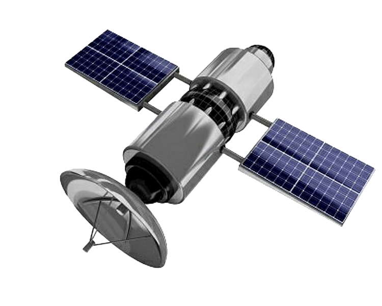
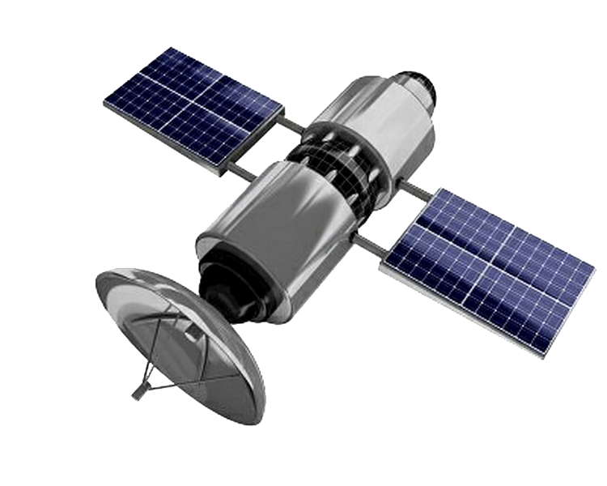

the world
the nature
The nucleus of a comet is made of ice and can be as small as a few meters across to giant boulders a few kilometres across
The closest point in a comet’s orbit to the Sun is called “perihelion”. The most distant point is called “aphelion”
As a comet gets closer to the Sun, it begins to experience heat. That causes some of its ices to sublimate

After the assassination of Julius Caesar a large comet hit the Earths atmosphere, it was seen in Rome and China and may have been brightest daylight comet in recorded history, it led to Caesar being Deified, an Imperial Cult, and the building of the “Temple of the Comet Star”

Some are ice and rock mixtures. The most interesting Uranian moon is Miranda; it has ice canyons, terraces, and other strange-looking surface areas. Only one spacecraft has flown by Uranus. In 1986, the Voyager 2 spacecraft swept past the planet at a distance of 81,500 km. It returned the first close-up images of the planet, its moons, and rings

At 110.6 metres (363 feet) tall, the Saturn V is the tallest rocket ever built. That is taller than a 36 story building!
The first two stages fell back to Earth and burnt up or landed in the ocean. The third stage stayed in space or crashed into the Moon! Five of these third stages are still in space orbiting the Sun near Earth.